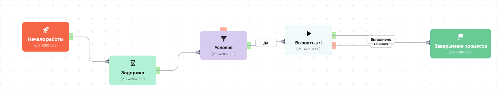

[AMO] [ED] Запуск_Клад_12.05 день 1 100586
- ID процесса:
2462169 - Объект: Пользователи
- Статус: Стартовал
Описание из GetCourse
08.05.2026 Задача: https://spi.bitrix24.ru/online/?IM_TASK=chat24416&IM_MESSAGE=2105576
https://vakas-tools.ru/account/base/amo.php?base_id=100586
1 день 12.05 вход https://investorpractic.getcourse.ru/clad_1 комната https://investorpractic.getcourse.ru/pl/webinar/show?id=3282287
Воронка: Отдел Доведения, Этап Посмотрели вебинар 1 Название в амо: Запуск_Клад_12.05 Тег в амо: Запуск_Клад_12.05
Понятное описание процесса
- Процесс работает с объектом GetCourse: Пользователи. Текущий статус процесса: Стартовал.
- На вход попадают данные так: В процесс попадают пользователи по правилу: В группе (ID: 4799164)..
- Дополнительные условия внутри схемы не извлечены: процесс идет напрямую по основной ветке или условия не подписаны.
- Дальше процесс делает прямые вызовы Vakas: 1. Напрямую задействованы базы: 100586.
- Передача: 100586. База 100586: Формы и анкеты. Передаются параметры:
name,email,phone,getcourse_user_id,utm_source,utm_medium,utm_campaign,utm_content,utm_term,commentsи другие. - Что происходит в amoCRM: На входе в этап ОТДЕЛ - ДОВЕДЕНИЯ -> ПОСМОТРЕЛИ ВЕБИНАР 1 [57387586] база ищет дубль и при необходимости переводит найденную сделку в рабочий этап.
Ход процесса в GetCourse
- Схема состоит из 2 блоков и 1 переходов.
- По типам: стартов 1, условий/ожиданий 0, вызовов URL 0, изменений полей 0, финалов 0.
Блоки процесса: что делают и зачем нужны:
- Блок
1«Начало работы» (старт). Что делает: Запускает выполнение схемы для объекта, который попал под правило входа процесса. Зачем нужен: Нужен как точка входа: от него GetCourse начинает движение объекта по схеме. Дальше: если результат «Выполнено», идет в «Вызвать url». - Блок
2«Вызвать url» (операция request). Что делает: Выполняет служебный шаг схемы «Вызвать url». Зачем нужен: Нужен как промежуточный технический шаг в схеме «Вызвать url». Дальше переходов нет: это конечная точка ветки.
Скриншоты процесса


Откуда: процесс берет пользователи по правилу входа, детали лучше смотреть на скриншоте ниже.
Что проверяет по пути: Задержка.
Куда ведет: вызывает внешние URL: Вызвать url; ставит задержки: Задержка.
Логика Vakas и amoCRM
- Условие входа в процесс: В группе (ID: 4799164)..
- Вызовов Vakas в схеме:
1. Уникальных URL Vakas:1. Связанных баз:1.
Связанная база Vakas: 100586. База 100586
- Использование в процессе: Формы и анкеты
- Документация базы: 100586. База 100586
- Страница настройки: Vakas
- Поиск дублей: Проверять на дубли
- Искать только в выбранных воронках: 1
- Ответственный по контакту имеет приоритет: Нет
Вызовы из процесса
Вызвать url
- Endpoint:
sendform - URL вызова:
https://vakas-tools.ru/base/sendform/8927217/100586/?name={object.name}&email={object.email}&phone={object.phone}&getcourse_user_id={object.id}&utm_source={object.create_session.utm_source}&utm_medium={object.create_session.utm_medium}&utm_campaign={object.create_session.utm_campaign}&utm_content={object.create_session.utm_content}&utm_term={object.create_session.utm_term}&comments={object.webinar_user_comments}&p1='' - Связанная база Vakas: 100586. База 100586
Когда срабатывает в процессе
- Сценарий 1:
Начало работы--Выполнено-->Вызвать url
Что уходит в Vakas
nameemailphonegetcourse_user_idutm_sourceutm_mediumutm_campaignutm_contentutm_termcommentsp1
Как база обработает вызов и что будет в amoCRM
- Логика создания сделки: сначала ищется существующая сделка/контакт по правилам базы; если подходящая сделка найдена, обновляется она, иначе создается новая.
- Режим проверки дублей: Проверять на дубли
- Искать дубль только в выбранных воронках: 1 шт.
- Учитывать закрытые этапы при поиске дубля: нет
- Добавлять телефон/email в найденный контакт: Нет
- Менять имя контакта при обновлении: Нет
ОТДЕЛ - ДОВЕДЕНИЯ [6795422]- Автоотправка регистраций в amoCRM: Да
- Базовый этап: ОТДЕЛ - ДОВЕДЕНИЯ -> ПОСМОТРЕЛИ ВЕБИНАР 1 [57387586]
- Этапы, из которых разрешен сдвиг: 13 этапов
- Менять название сделки при обновлении: Да
- Менять имя контакта при обновлении: Нет
- Ответственный по умолчанию: EasyDrafting[12985298]
- Всегда менять ответственного: Нет
- Теги сделки: Запуск_Клад_12.05
- Индивидуальные правила маршрутизации: нет